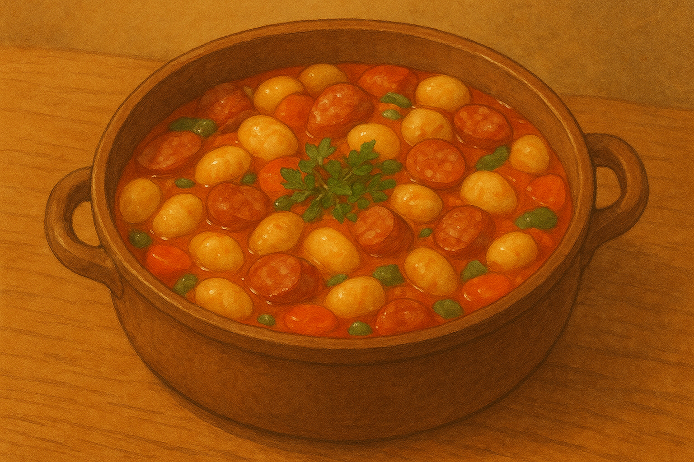

One-Pan Sausage Gnocchi
Home

Description
Gnocchi is the best and one-pan sausage gnocchi is amazing.
Try this simple recipie and see what you think.
Ingredients
- 2 teaspoons unsalted butter
- 1 (12 oounce) package garlic and herb chicken sausage, sliced diagonally
- 14 ounces frozen gnocchi
- 2 tablespoons chicken bone broth
- 1 clove garlic, minced
- 2 tablespoons heavy cream
- 1/2 cup torn spinach
Steps
- Melt butter in a skillet over medium heat. Add sausage, and cook, stirring, until golden, about 5 minutes. Transfer sausage to a plate and keep warm.
- Add gnocchi and chicken broth to the skillet; cover and cook for 4 minutes. Stir in whipping cream and spinach; cook until spinach is wilted, 1 to 2 minutes.
- Return sausage to the skillet. Stir to combine. Serve immediately.